1 UX动效设计
1.1 UX动效设计
图1-1
人因x动效
力的既视感
- 将力赋予元素
- 直观地传递出形象化、拟物化、动态化
图1-2

力的秩序感
- 有序的、一致的、节奏的运动能够创造更强的秩序感
- 秩序感更容易引起用户注意力
- 秩序感对转场元素的运动编排尤为重要
图1-3

力的控制感
- 摩擦力、重力、斥力在交互界面中以操作的方式被感知
- 力的传递与心理预期产生呼应
- 元素通过速度或节奏等，传达出仿真物理世界的感受
图1-4

自然流畅
- 流畅性是人对加工信息难易程度的一种主观体验
- 三者合一：手势触控、视觉感知、心理预期
- 基础要求：帧率稳定、响应及时、跟手操作
图1-5
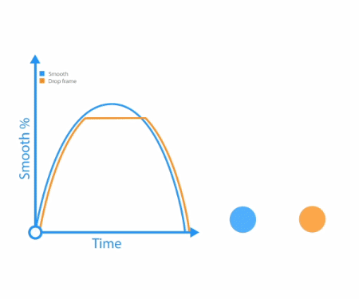
高效快速
- 界面元素运动尽可能少且简洁
- 长距离保持在350ms内
- 短距离保持在250ms内
- 较短的动画保持在150ms内完成动作
图1-6
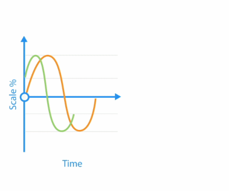
运动一致
- 在动作编排时应遵循运动路径方式一致
- 不一致的运动会分散用户视觉焦点
- 运用适当的编排手法，引导用户聚焦操作任务
图1-7
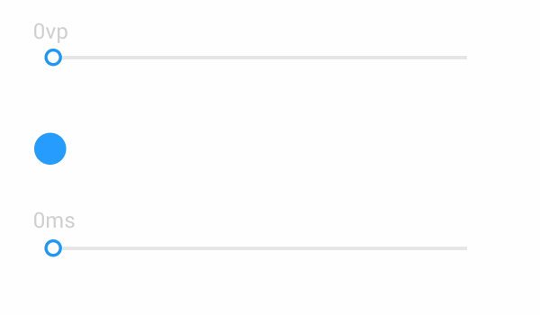
隐藏等待
- 动效能够减少用户在操作时的等待感
- 通过元素的运动或转场过渡，减少用户对界面等待产生的焦虑
图1-8
1.2 转场动效
衔接页面与页面，或元素与元素间的过渡动画称之为转场动效，帮助用户理解界面以及元素之间的逻辑关系。
层级转场
- 转场后的页面或元素与当前存在上下层级关系。
- 页面转场采用左右位移的运动方式，不应单帧直接切换或者上下位移切换。
- 应用场景：上下级页面切换、解锁操作。
推荐：列表样式转场采用左右位移的运动方式
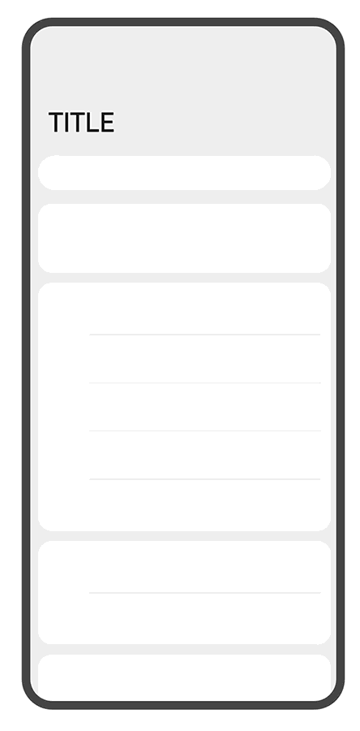
推荐：混合样式切换采用左右位移的运动方式
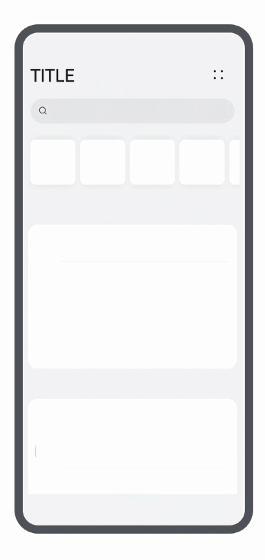
不推荐：页面转场采用单帧切换
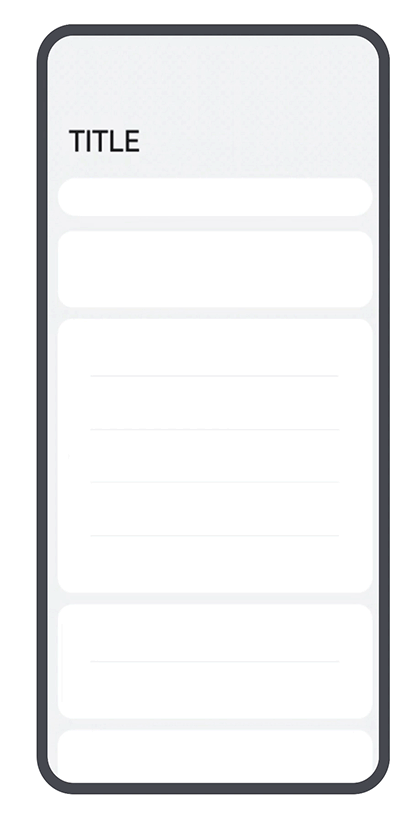
搜索转场
- 一镜到底是通过共享元素、容器和动势来进行转场过渡的一种编排方式。
- 搜索框作为持续存在的元素前后串连，建议使用一镜到底；不应单帧直接切换或者非共享元素的方式转场。
- 曲线优先使用弹簧曲线。
推荐：一镜到底
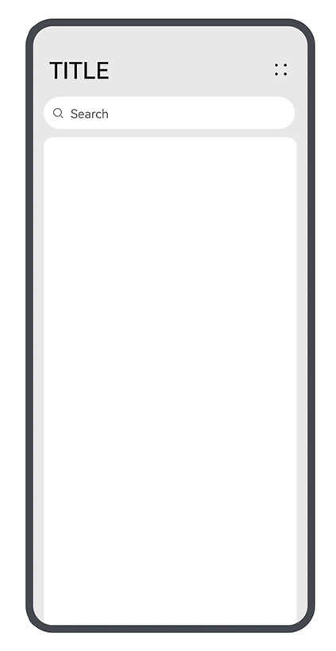
推荐：淡入淡出
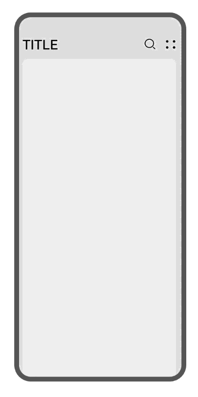
不推荐：左右平移
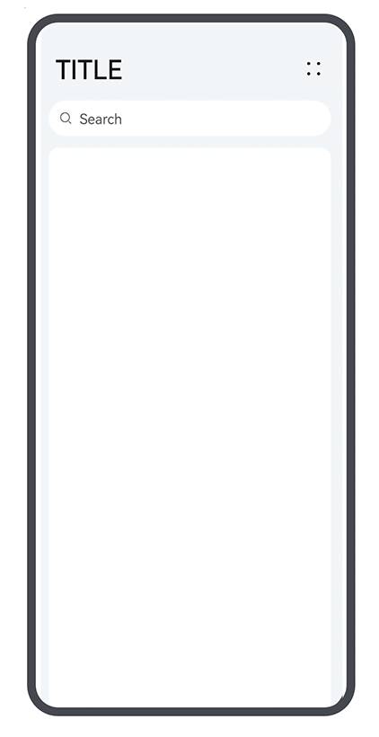
新建转场
- 新建功能目的性层、级性明确。
- 系统页面转场采用上下位移的半模态运动方式，不应单帧直接切换或者左右位移切换。
- 曲线优先使用弹簧曲线。
推荐：半模态上下位移
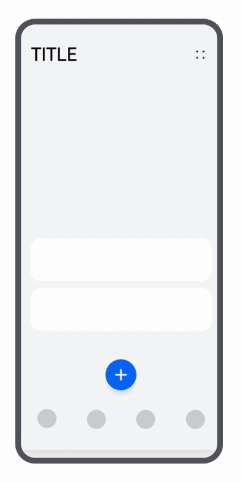
推荐：淡入淡出
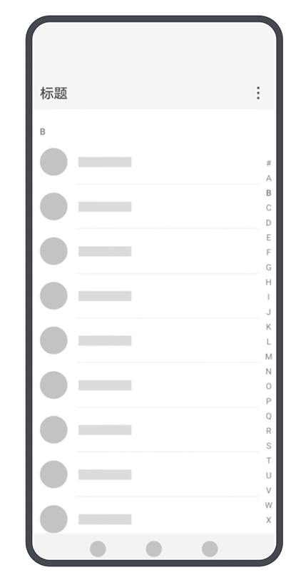
不推荐：左右平移
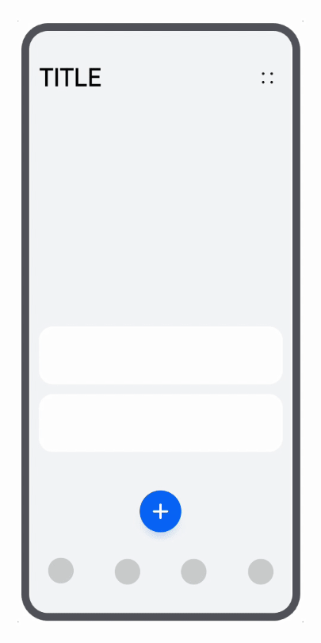
编辑转场
- 建议使用淡入淡出的过渡方式。
- 不应单帧直接切换或者位移切换。
- 曲线优先使用弹簧曲线。
推荐：一镜到底
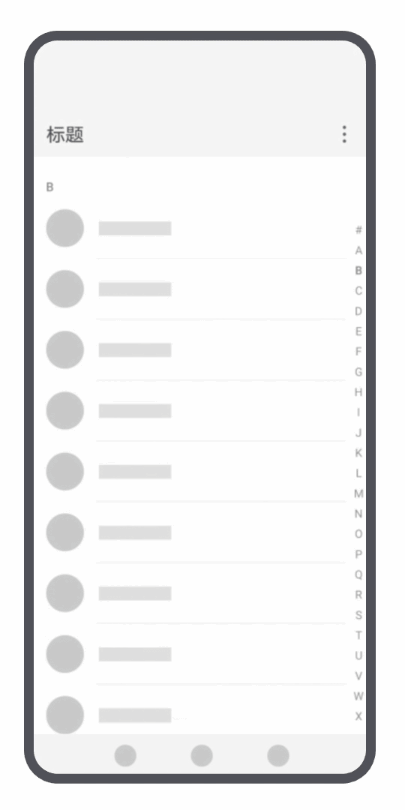
不推荐：左右切换
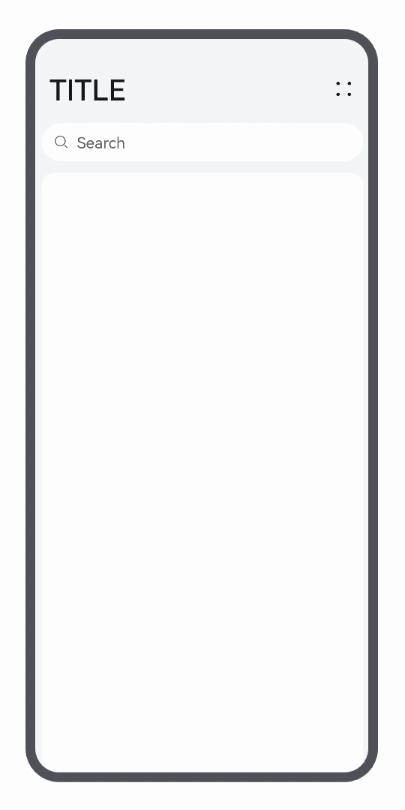
不推荐：上下平移
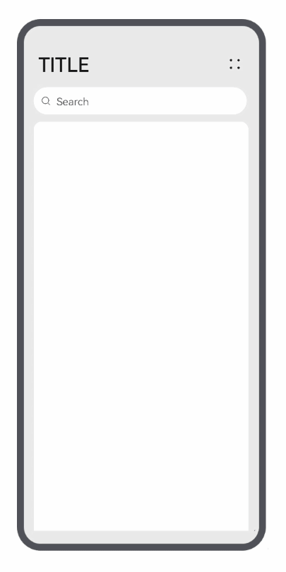
卡片打开
- 前后相邻界面切换跳转，或较大元素的进出场必须有转场动效过渡，如无特殊原因。
- 推荐使用一镜到底的共享元素手法。
- 不应单帧直接切换(含动效设计缺失和实现效果丢失两种情况)。
- 全屏页面的转场动效时长，8.5英寸以下设备不应短于200ms。
- 8.5至12英寸的设备上不应短于250ms。
- 12英寸以上的设备上不应短于300ms。
推荐：一镜到底
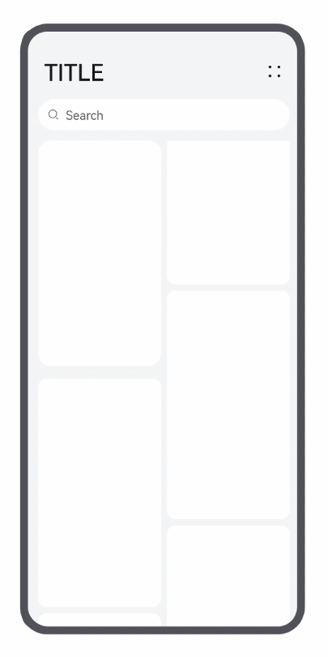
推荐：一镜到底
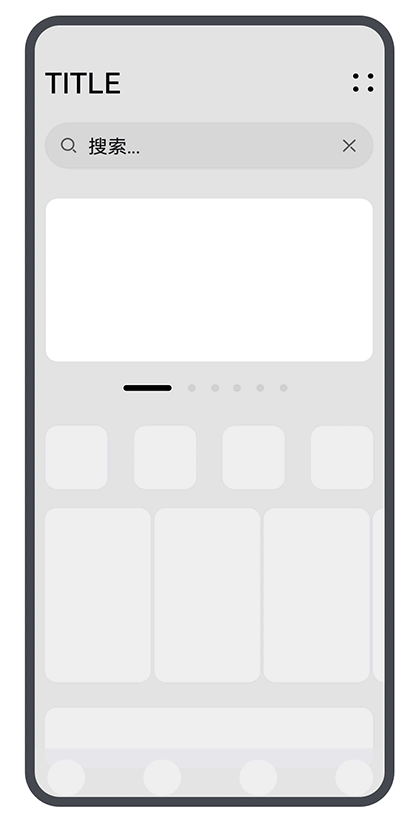
不推荐：单帧切换
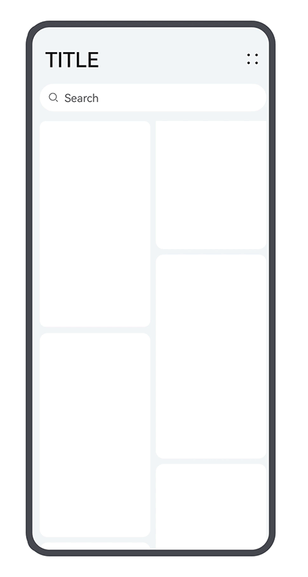
推荐：一镜到底
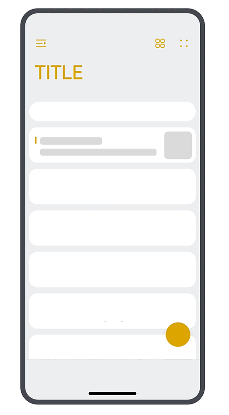
不推荐：单帧切换
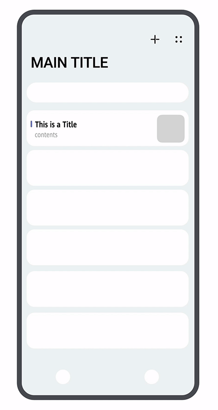
多种编排
- 同类型动效编排方式差异：例如手机上使用图标到界面共享容器的方式；智慧屏上采用共享动势的方式来避免过大的位移路径给用户带来不适感。
- 应用启动时(包括通过图标、服务卡片、通知卡片等入口)应尽量避免显示无内容的启动页(全黑、全白色彩填充）。
- 有内容填充的启动页在全屏状态停留时长不建议超过3s，全黑、全白的空白无内容启动页在全屏状态停留时长不建议超过300ms。
推荐：一镜到底
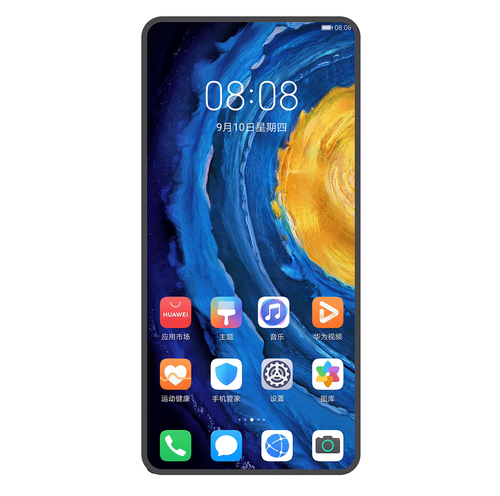
1.3 手势动效
手在终端屏幕或触摸板等输入设备上进行跟手操作的动效，大致分为点击、滑动、拖拽等手势。
列表滑动
- 通过弹性曲线等物理模型，带来流畅的操作反馈感，还原真实可行的手势操作体验。
- 可滑动页面达到一定手速的滑动操作时，手离开屏幕后，界面应继续移动。
- 移动速度应该随时间缓慢下降，直至界面停止。
- 上下滑动到顶部或底部，应该有反馈动效。
- 左右滑动到左边界或右边界)，应该有反馈动效。
推荐：不满一屏滑动
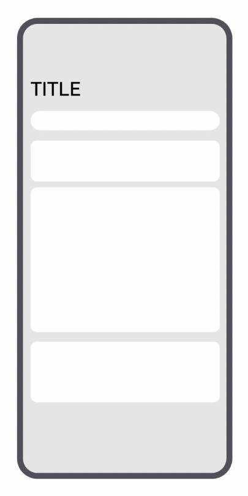
不推荐：页面不跟手
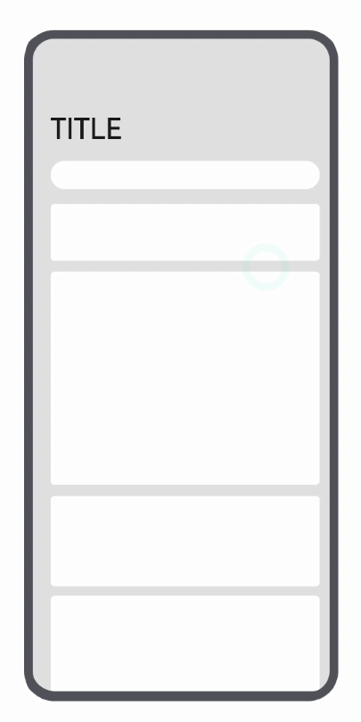
推荐：过界回弹
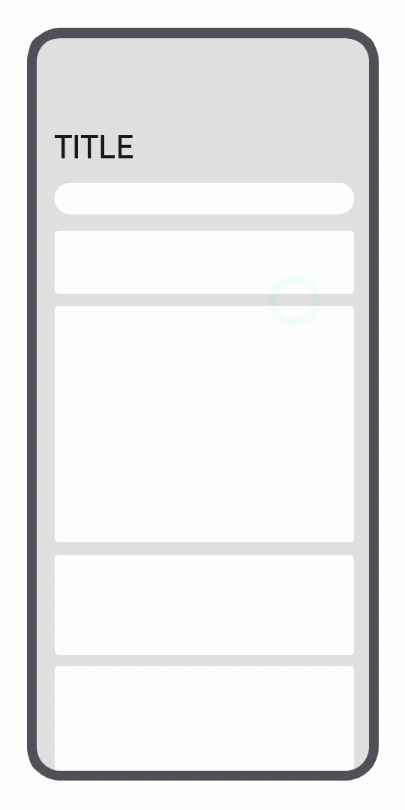
不推荐：无阻尼&过界无回弹
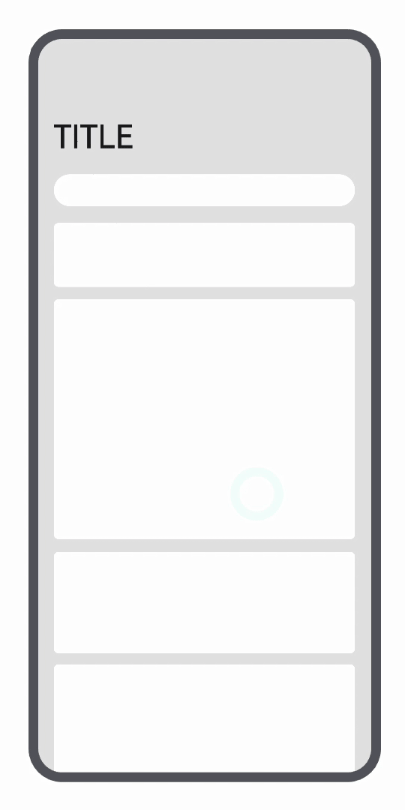
推荐：大小标题联动
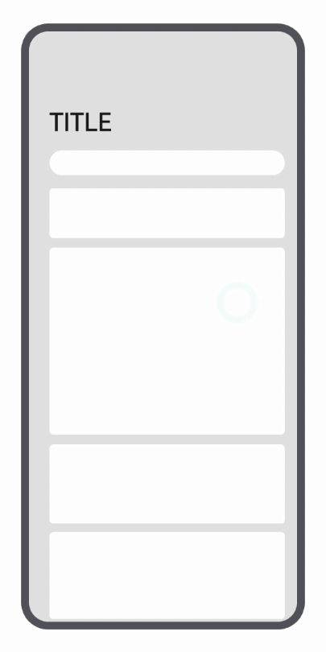
翻页滑动
- 翻动通过抛滑和拖拽手势进行操作，由翻页这类场景承载。
- 翻页是基于设定区域进行对象内容的翻动切换。
- 到达边界后应尽可能赋予回弹的操作体验。
推荐：翻页跟手
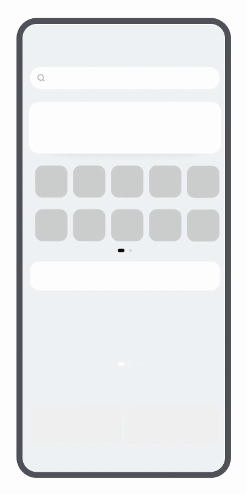
推荐：过界回弹
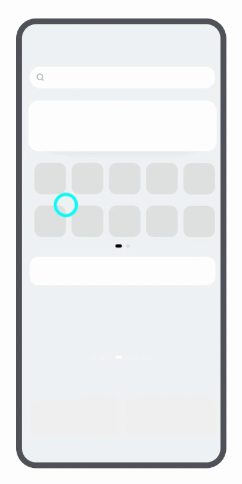